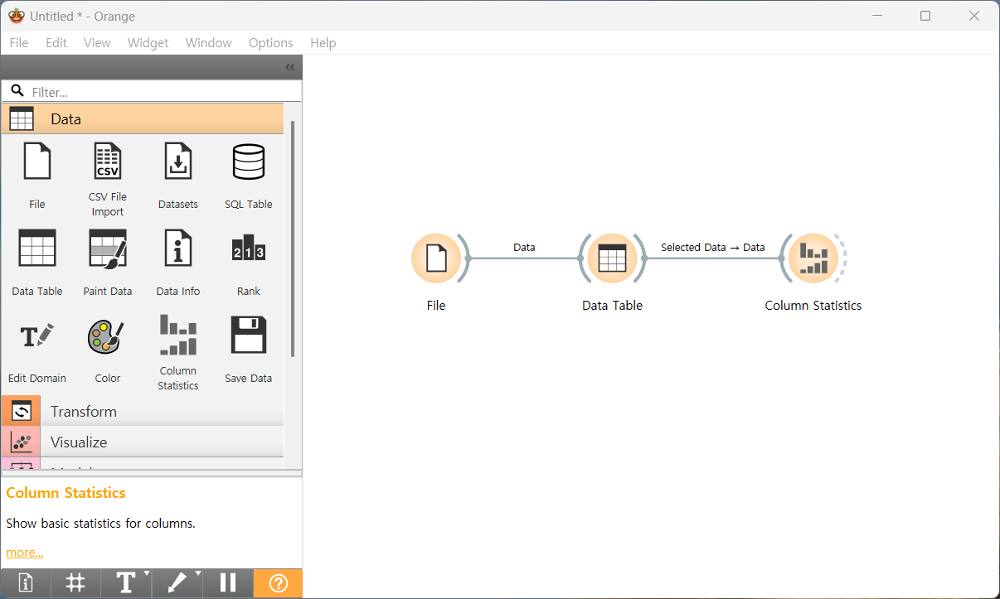
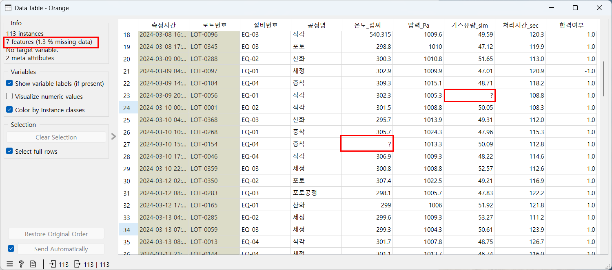
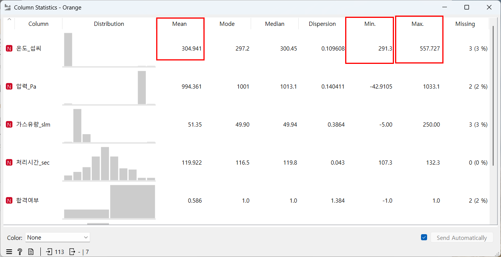

데이터 훑어보기와 정리(EDA)
오늘의 질문: "코드를 한 줄도 쓰기 전에, 이 데이터에 어떤 문제가 있어 보이는지 먼저 확인할 수 있을까?"
학습 목표
- 공장 데이터에 빈칸·중복·튀는 값이 왜 생기는지, 그대로 두면 평균이 어떻게 틀어지는지 설명할 수 있다.
- Orange3로 CSV를 열어 빈칸과 튀는 값이 있는 열을 먼저 눈으로 찾을 수 있다.
- Pandas로 결측값·중복값·이상값을 찾고, 지울지 채울지 골라 정리할 수 있다.
- 정리 전후의 행 개수와 평균을 비교해 한 문장으로 해석할 수 있다.
선수 지식: 4차시 — read_csv, 열 선택, 조건 검색 / 3차시 — for 반복문 / 1차시 — f-string
왜 이걸 배워야 할까?
공장 데이터에는 빈칸·중복·튀는 값이 끼어든다. 정리하지 않으면 코드는 돌아가도 숫자가 틀린다(오늘 실습에서 직접 계산하는 결과).
| 항목 | 정리 전 | 정리 후 | 무엇이 달라졌나 |
|---|---|---|---|
| 행 개수 | 113행 | 102행 | 중복 3행, 결과가 빈 2행, 튀는 값이 있는 6행을 덜어냈다 |
| 평균 온도 | 304.9 | 300.6 | 540도·557도 기록 2건이 평균을 끌어올리고 있었다 |
| 평균 압력 | 994.4 | 1013.6 | 음수 압력 2건이 평균을 끌어내려 학습용 정상 범위(995~1025) 밖처럼 보였다 |
| 최고 온도 | 557.7 | 310.9 | "가장 뜨거웠던 기록"이 완전히 다른 값이 됐다 |
지난 시간 복습
- 4차시:
pd.read_csv()로 읽고,df[df["설비번호"] == "EQ-02"]처럼 조건 검색,df[["로트번호", "온도_섭씨"]]처럼 여러 열 선택. - 오늘은 같은 조건 검색으로 "말이 안 되는 값"을 찾고, 1차시의 "여러 열을 함께 본다"를 이상값에 다시 쓴다.
데이터 정리 개념 이해하기
먼저 쉬운 예제로 — 반 학생 기록 15줄
개념은 쉬운 예제(반 학생 기록)로 익히고, 반도체 데이터는 뒤의 "반도체 데이터로 확인하기"와 실습지에서 다룬다.
week05_easy_class_records.csv(15행 5열)는 생활 예제용 가상 데이터다.
| 행 | 이름 | 반 | 키_cm | 몸무게_kg | 수학_점수 |
|---|---|---|---|---|---|
| 0 | 김민준 | 1반 | 165.2 | 55.1 | 85 |
| 1 | 이서연 | 1반 | 158.4 | 48.3 | 92 |
| 2 | 박지호 | 1반 | 171.0 | 63.5 | 78 |
| 3 | 최수아 | 1반 | 50.2 | 88 | |
| 4 | 정도윤 | 2반 | 1720.0 | 66.0 | 74 |
| 5 | 강하린 | 2반 | 160.5 | 51.8 | 95 |
| 6 | 조예준 | 168.3 | 59.4 | 81 | |
| 7 | 윤지우 | 2반 | 155.9 | 46.7 | 69 |
| 8 | 장서준 | 2반 | 174.6 | 90 | |
| 9 | 임하은 | 3반 | 162.1 | 52.9 | 83 |
| 10 | 한시우 | 3반 | 169.8 | 61.2 | 76 |
| 11 | 오유나 | 3반 | 157.3 | 47.5 | 98 |
| 12 | 서주원 | 3반 | 176.2 | 70.3 | 72 |
| 13 | 신채원 | 3반 | 161.7 | 53.6 | 87 |
| 14 | 박지호 | 1반 | 171.0 | 63.5 | 78 |
오늘 반도체 데이터의 열
week05_dirty_process_data.csv(113행 9열, 교육용 가상 데이터). 한 행 = 공정 작업 1건.
| 열 | 공장에서의 뜻 |
|---|---|
측정시간, 로트번호, 설비번호, 공정명 | 언제, 어느 웨이퍼 묶음을, 어느 기계(EQ-01~EQ-04)에서, 어떤 작업(포토·식각·증착·세정·산화)으로 |
온도_섭씨, 압력_Pa, 가스유량_slm | 센서가 잰 설비 안의 온도·압력, 흘려 넣은 가스의 양(slm: 1분 동안 흐른 가스 리터) |
처리시간_sec | 작업에 걸린 시간(초) |
합격여부 | 검사 결과. 1 = 합격, -1 = 불합격 |
| 표기 | 읽는 법 | 뜻 |
|---|---|---|
cm (키_cm) | 센티미터 | 길이. 100cm = 1m |
kg (몸무게_kg) | 킬로그램 | 무게. 1kg = 1000g |
sec (처리시간_sec) | 초 (영어로 second의 줄임) | 시간. 60초 = 1분 |
값과 정상 범위(온도 295~305, 압력 995~1025, 가스유량 47~53)는 학습용이라 실제 공정 조건으로 해석하지 않는다.
데이터는 왜 지저분해질까
| 문제 | 한 줄 뜻 | 반 학생 기록 | 공장에서 생기는 이유(예) | 반도체 데이터 |
|---|---|---|---|---|
| 결측값 | 칸이 비어 있다 | 빈칸 3칸 | 센서 꺼짐, 통신 끊김, 입력 누락 | 10칸 |
| 중복값 | 같은 기록이 두 번 저장됐다 | 박지호 두 번 | 같은 기록을 다시 보냄, 파일 합치다 겹침 | 3행 |
| 이상값 | 값은 있는데 말이 안 되게 튄다 | 키 1720cm | 센서 고장, 입력 실수, 또는 진짜 설비 문제 | 6건 |
| 입력 오류 | 같은 뜻인데 글자·형식이 다르다 | 없음 | 오타, 설비마다 다른 날짜 형식 | 공정명 3건, 측정시간 2건(오늘은 이름만) |
- 두 데이터의 오류는 연습용으로 일부러 넣었다. 표의 이유는 현장에서 흔한 예다.
- 빈칸은 Pandas에서
NaN(값 없음)이다. 키를 안 잰 학생은 0cm가 아니다 — 0으로 채우면 평균이 틀어진다. - 순서: 훑어보기 → 결측값 → 중복값 → 이상값 → 정리 전후 비교.
① Orange3로 먼저 훑어보기
코드 없이 반도체 CSV를 열어본다. 왼쪽 Data 묶음에서 위젯 세 개를 캔버스로 끌어다 놓고 선으로 잇는다 (처음이면 부록: Orange3 시작하기).
- File — 더블클릭 → 폴더 아이콘 →
week05_dirty_process_data.csv선택. - Data Table — File과 잇고 더블클릭. 빈칸은
?로 보인다. - Column Statistics(버전에 따라 Feature Statistics) — Data Table과 잇고 Min., Max., Missing 칸을 본다.


?. Info 칸의 missing 비율은 넘어가도 된다. 열별 빈칸 개수는 Column Statistics의 Missing 칸에서 본다.
| 볼 곳 | 보이는 값 | 뜻 |
|---|---|---|
| Missing 칸 | 온도 3, 압력 2, 가스유량 3, 합격여부 2 | 빈칸이 있는 열 |
| 온도_섭씨 Max. | 557.727 | 정상 범위(295~305)보다 훨씬 크다 → 이상값 후보 |
| 압력_Pa Min. | -42.9105 | 압력이 음수다 → 이상값 후보 |
| 가스유량_slm Min. / Max. | -5.00 / 250.00 | 음수, 평소(약 50)의 5배 → 이상값 후보 |
| 온도_섭씨 Mean / Median | 304.941 / 300.45 | 평균이 중앙값보다 크다 → 큰 값이 평균을 끌어올리는 중 |
② 파이썬으로 숫자 요약 보기 — describe()
describe()는 숫자 열마다 개수·평균·최솟값·최댓값을 한 번에 요약한다(Column Statistics의 코드판).
반 학생 기록을 students에 담는다.
쉬운 예제 — 반 학생 기록
import pandas as pd
students = pd.read_csv("../../data/weekly/week05/week05_easy_class_records.csv", encoding="utf-8-sig")
print(students.shape)
print(students.describe())(15, 5)
키_cm 몸무게_kg 수학_점수
count 14.000000 14.000000 15.000000
mean 276.571429 56.428571 83.066667
std 415.497775 7.537132 8.639334
min 155.900000 46.700000 69.000000
25% 160.800000 50.600000 77.000000
50% 166.750000 54.350000 83.000000
75% 171.000000 62.925000 89.000000
max 1720.000000 70.300000 98.000000
count14 → 키·몸무게에 빈칸이 하나씩.max1720.0 → 튀는 값.mean(평균) 276.6 vs50%(중앙값) 166.75 → 튀는 값 하나가 평균만 끌어올렸다. 글자 열(이름·반)은 나오지 않는다.std·25%·75%는 오늘은 넘어간다(25%·75%는 6차시 박스플롯에서 다시 본다).
쉬운 예제 — 정리 전 값 기억해 두기
before_students = len(students)
before_height = students["키_cm"].mean()
before_weight = students["몸무게_kg"].mean()
print(f"정리 전: {before_students}명, 평균 키 {before_height:.1f}, 평균 몸무게 {before_weight:.1f}")정리 전: 15명, 평균 키 276.6, 평균 몸무게 56.4
열.mean()은 평균, 열.median()은 중앙값을 바로 구한다. 2차시에 sum() / len()으로 하던 계산을 한 번에 하는 것이다(빈칸 NaN은 빼고 계산한다).
결측값 세고 처리하기 — isna(), dropna(), fillna()
isna()는 칸마다 "비어 있나?"를 True/False로 바꾸고, .sum()이 True를 세어 열별 빈칸 개수가 나온다.
쉬운 예제 — 빈칸 세기
print(students.isna().sum())이름 0 반 1 키_cm 1 몸무게_kg 1 수학_점수 0 dtype: int64
지울까, 채울까 — dropna()와 fillna()
| 방법 | 이럴 때 | 반 학생 기록 |
|---|---|---|
dropna() — 행 지우기 | 짐작해서 채우면 안 되는 값(반·검사 결과) | 조예준의 반 |
fillna(값) — 채우기 | 측정값 한 칸만 비고 나머지는 멀쩡 | 최수아의 키, 장서준의 몸무게 |
쉬운 예제 — 반이 빈 행은 지우고, 키·몸무게 빈칸은 채우기
students = students.dropna(subset=["반"])
print(students.shape)
for col in ["키_cm", "몸무게_kg"]:
median_value = students[col].median()
students[col] = students[col].fillna(median_value)
print(students.isna().sum())(14, 5) 이름 0 반 0 키_cm 0 몸무게_kg 0 수학_점수 0 dtype: int64
subset=["반"]은 "이 열이 빈 행만 지워라". 앞의students =로 다시 저장해야 반영된다.for로 두 열을 돌며 중앙값(키 165.2, 몸무게 53.6)으로 빈칸을 채웠다.col에는 반복할 때마다"키_cm","몸무게_kg"가 차례로 들어간다.=왼쪽에students[col]을 쓰면 그 열을 빈칸을 채운 값으로 바꿔 저장한다.
데이터 분석을 처음 배우는 사람이야. 빈칸(결측값)을 지우는 것과 채우는 것은 각각 언제 쓰는지, 반 학생들 시험 점수표를 예로 들어 초보자 눈높이로 설명해줘.중복값 찾고 지우기
duplicated()는 앞의 행과 모든 칸이 같은 행을 True로 표시하고, drop_duplicates()는 그 여분을 지운다.
쉬운 예제 — 두 번 적힌 학생
print(students.duplicated().sum())
dup = students[students.duplicated()]
print(dup[["이름", "반", "키_cm", "몸무게_kg"]])
students = students.drop_duplicates()
print(students.shape)1
이름 반 키_cm 몸무게_kg
14 박지호 1반 171.0 63.5
(13, 5)
students[students.duplicated()]는 4차시 df[조건]과 같은 모양이다(duplicated()가 True인 행만 고른다).
원본(2행)은 남고 여분(14행)만 지워져 1행만 줄었다.
이상값 찾기 — 지우기 전에 들여다보기
이상값은 값이 있어서 isna()로 안 잡힌다. 조건 검색으로 찾고, 지우기 전에 다른 열과 함께 본다.
쉬운 예제 — 키 1720cm
tall = students[students["키_cm"] > 250]
print("키 250 초과:", len(tall), "명")
print(tall[["이름", "반", "키_cm", "몸무게_kg"]])키 250 초과: 1 명
이름 반 키_cm 몸무게_kg
4 정도윤 2반 1720.0 66.0
몸무게 66.0kg은 평범하다 → 172.0을 적다 소수점을 빠뜨린 입력 실수를 의심할 수 있다.
이상값 지우기 — 무엇을 지우고 무엇을 남길까
| 선택 | 언제 | 방법 |
|---|---|---|
| 행을 지운다 | 기록 오류가 분명할 때 | 조건 검색으로 정상 행만 남긴다(오늘 실습) |
| 값만 고친다 | 한 칸만 튀고 올바른 값이 확실할 때(1720 → 172.0) | df.loc[조건, "열이름"] = 새 값 (오늘은 구경만) |
| 남겨두고 표시한다 | 진짜 문제의 신호일 수 있을 때 | 따로 모아 담당자에게 확인 요청 |
오늘 이상값은 연습용 기록 오류라 행을 지운다. 찾을 때 쓴 조건의 반대만 남긴다.
쉬운 예제 — 키 250 이하만 남기기
students = students[students["키_cm"] <= 250]
print(students.shape)(12, 5)
너는 반도체 공장의 공정 엔지니어야. 압력 센서에 -42라는 값이 찍혔을 때, 그 기록을 지울지, 값을 고칠지, 그대로 두고 설비를 먼저 확인할지 초보자에게 역할극으로 설명해줘.정리 전후 비교하기
쉬운 예제 — 반 학생 기록 정리 전후
after_height = students["키_cm"].mean()
after_weight = students["몸무게_kg"].mean()
print(f"학생 수: {before_students} → {len(students)}")
print(f"평균 키: {before_height:.1f} → {after_height:.1f}")
print(f"평균 몸무게: {before_weight:.1f} → {after_weight:.1f}")학생 수: 15 → 12 평균 키: 276.6 → 164.8 평균 몸무게: 56.4 → 54.6
반도체 데이터로 확인하기
반도체 데이터(df)도 쉬운 예제와 같은 순서로 정리한다(전체 과정은 실습지 문제 1~10).
바꾸는 것은 students → df와 열 이름이다. 결과 열 합격여부(1 = 합격, -1 = 불합격)는 반처럼 빈 행을 지우고,
측정값 온도_섭씨·압력_Pa·가스유량_slm은 키처럼 중앙값으로 채운다. 여기서는 핵심 세 가지만 확인한다.
확인 1 — Orange3에서 본 빈칸이 코드로도 같을까?
df = pd.read_csv("../../data/weekly/week05/week05_dirty_process_data.csv", encoding="utf-8-sig")
print(df.shape)print(df.isna().sum())(113, 9) 측정시간 0 로트번호 0 설비번호 0 공정명 0 온도_섭씨 3 압력_Pa 2 가스유량_slm 3 처리시간_sec 0 합격여부 2 dtype: int64
공장 말로 읽기 — 빈칸 10칸, Orange3 Missing 칸과 같다. Orange3로 못 찾은 중복 3행은 duplicated().sum()이 찾는다(실습지 문제 6).
확인 2 — 이상값을 지우기 전에 여러 열과 함께 보면?
교육용 기준: 온도 400 초과, 가스유량 0 미만 또는 200 이상, 압력 0 미만(이 과정에서는 압력이 0보다 작을 수 없다고 정한다).
hot = df[df["온도_섭씨"] > 400]
minus_pressure = df[df["압력_Pa"] < 0]
minus_gas = df[df["가스유량_slm"] < 0]
big_gas = df[df["가스유량_slm"] >= 200]
print("온도 400 초과:", len(hot), "건")
print("압력 0 미만:", len(minus_pressure), "건")
print("가스유량 0 미만:", len(minus_gas), "건")
print("가스유량 200 이상:", len(big_gas), "건")
print(hot[["설비번호", "공정명", "온도_섭씨", "합격여부"]])
print(minus_pressure[["설비번호", "공정명", "압력_Pa", "합격여부"]])온도 400 초과: 2 건
압력 0 미만: 2 건
가스유량 0 미만: 1 건
가스유량 200 이상: 1 건
설비번호 공정명 온도_섭씨 합격여부
17 EQ-03 식각 540.315405 1.0
67 EQ-03 증착 557.727366 1.0
설비번호 공정명 압력_Pa 합격여부
37 EQ-04 식각 -42.910520 1.0
79 EQ-02 산화 -26.981234 1.0
1.0은 1(합격)과 같다. 빈칸(NaN)이 섞인 열은 숫자가 소수로 저장돼1.0처럼 보인다.- 공장 말로 읽기 — 모두 합격(1)이다. 200도 넘게 뜨거웠는데 통과했으니 온도 기록 오류를 먼저 의심할 만하다(쉬운 예제의 몸무게 66.0kg과 같은 생각법).
- 고온 2건과 가스유량 이상값 2건이 모두 EQ-03(6건 중 4건). "EQ-03 센서를 점검해보자"는 확인할 단서까지만 말한다 — 6건뿐이라 우연일 수 있다.
확인 3 — 정리하면 평균은 얼마나 달라질까?
정리하기 전에 실습지 문제 2에서 before_rows = len(df), before_temp = df["온도_섭씨"].mean(),
before_pressure = df["압력_Pa"].mean()로 값을 저장해 두고, 문제 3~9로 정리한 뒤 비교한다.
after_temp = df["온도_섭씨"].mean()
after_pressure = df["압력_Pa"].mean()
print(f"행 개수: {before_rows} → {len(df)}")
print(f"평균 온도: {before_temp:.1f} → {after_temp:.1f}")
print(f"평균 압력: {before_pressure:.1f} → {after_pressure:.1f}")행 개수: 113 → 102 평균 온도: 304.9 → 300.6 평균 압력: 994.4 → 1013.6
공장 말로 읽기 — 고온 2건이 평균 온도를 4.3 끌어올렸고, 음수 압력 2건이 평균 압력을 정상 범위(995~1025) 밖처럼 보이게 했다. 113건 중 몇 건이 결론을 뒤집는다 — 계산 전에 먼저 살펴야 하는 이유다.
실습: 데이터 정리 따라 하기
week05_student.ipynb를 위에서 아래로 실행한다. 쉬운 예제 셀은 완성돼 있고, 반도체 실습 셀의 ____를
실습지 문제를 보며 채운다.
students와 df는 셀마다 바뀐다. 숫자가 다르면 "커널 → 다시 시작 후 모두 실행".핵심 용어 카드
EDA
- 한 줄 설명
- 분석 전에 데이터를 훑어보고 상태를 파악하는 일.
- 데이터에서의 예
- Orange3 Column Statistics,
students.describe()
결측값
- 한 줄 설명
- 비어 있는 칸. Pandas
NaN, Orange3?. 0과 다르다. - 데이터에서의 예
students.isna().sum()→ 반·키·몸무게 1칸씩
중복값
- 한 줄 설명
- 모든 칸이 같은 행이 두 번 이상 저장된 것. 지우면 복사본만 사라진다.
- 데이터에서의 예
students.duplicated().sum()→ 1(박지호)
이상값
- 한 줄 설명
- 동떨어지게 튀는 값. 지우기 전에 먼저 확인할 값.
- 데이터에서의 예
- 키 1720cm, 온도 540.3·557.7, 압력 -42.9
중앙값
- 한 줄 설명
- 크기순 한가운데 값. 튀는 값에 덜 흔들린다.
- 데이터에서의 예
- 키 평균 276.6, 중앙값 166.75(
describe()의50%)
지우기 vs 채우기
- 한 줄 설명
- 결과 빈칸은 행을 지우고, 측정값 빈칸은 채운다.
students = students.dropna(...)처럼 다시 저장한다. - 데이터에서의 예
- 반 → 지우기, 키·몸무게 → 중앙값으로 채우기
데이터
data/weekly/week05/week05_easy_class_records.csv— 15행 5열, 쉬운 예제용 가상 데이터. 결측 3칸, 중복 1행, 이상값 1개.data/weekly/week05/week05_dirty_process_data.csv— 113행 9열, 교육용 가상 데이터. 결측 10칸, 중복 3행, 이상값 6건, 공정명 오타 3건, 형식이 다른 측정시간 2건. Orange3와 Pandas가 같은 파일을 쓴다.- 열 설명: 데이터 설명서
주의할 점 & 자주 발생하는 오류
KeyError: '온도' — 온도_섭씨처럼 정확히 쓴다(print(df.columns)로 확인).
KeyError: ['반'] — df.dropna(subset=["반"])처럼 반도체에 없는 열을 썼다. "합격여부"로 바꾼다.
AttributeError: 'function' object has no attribute 'sum' — df.duplicated().sum()처럼 괄호를 붙인다.
TypeError: Invalid comparison between dtype=float64 and str — "400"이 아니라 400.
df =를 빼면 오류 없이 df가 그대로다. 행을 지워도 맨 왼쪽 번호는 다시 매겨지지 않는다(102행인데 맨 끝 번호는 109번이다).
결과 정리 & 퀴즈
더 많은 문제는 실습지에 있다.
students.dropna(subset=["반"])를 반도체 데이터에 적용할 때 subset에 넣을 열은?AI로 한 걸음 더 — 질문하고 코드 받아보기
- "데이터에 빈칸이 있을 때 지우는 것과 채우는 것은 각각 언제 쓰나요? 공장 데이터 예시로 설명해주세요."
- "평균과 중앙값의 차이를 용돈 이야기로 설명해주세요."
- "이상값을 무조건 지우면 안 되는 이유를 예시와 함께 알려주세요."
import pandas as pd
data = pd.read_csv("../../data/weekly/week05/week05_dirty_process_data.csv", encoding="utf-8-sig")
for col in data.columns:
count = data[col].isna().sum()
rate = count / len(data) * 100
print(f"{col}: 빈칸 {count}개 ({rate:.1f}%)")측정시간: 빈칸 0개 (0.0%) 로트번호: 빈칸 0개 (0.0%) 설비번호: 빈칸 0개 (0.0%) 공정명: 빈칸 0개 (0.0%) 온도_섭씨: 빈칸 3개 (2.7%) 압력_Pa: 빈칸 2개 (1.8%) 가스유량_slm: 빈칸 3개 (2.7%) 처리시간_sec: 빈칸 0개 (0.0%) 합격여부: 빈칸 2개 (1.8%)
encoding="utf-8-sig"를 맞춘다. 회사의 실제 데이터는 AI에 붙여넣지 않는다.
과제(다음 차시까지)
Jupyter Notebook 한 개에 작성하고, 결과가 출력된 상태로 제출한다.
가스유량_slm)을 f-string으로 비교한다.
minus_gas, big_gas를 설비번호·공정명·합격여부와 함께 출력하고 관찰을 두 문장으로 적는다("원인이다"가 아니라 "확인할 단서"로).
핵심 질문 → 데이터 연결
- 질문: Orange3에서 본 문제와 Pandas로 찾은 문제가 같은가? 정제 전후 평균 온도는 얼마나 달라지는가?
- 답: 빈칸 10칸과 튀는 값은 두 도구에서 같았고, 중복 3행은 코드로 찾았다. 평균 온도는 304.9 → 300.6(4.3 하락).
다음 차시 예고
6차시에는 데이터를 그래프로 본다. 히스토그램·박스플롯에서 오늘 찾은 튀는 값이 그림으로 보인다. Orange3로 먼저 그린 뒤 Matplotlib으로 그린다.